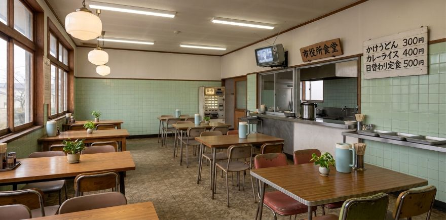
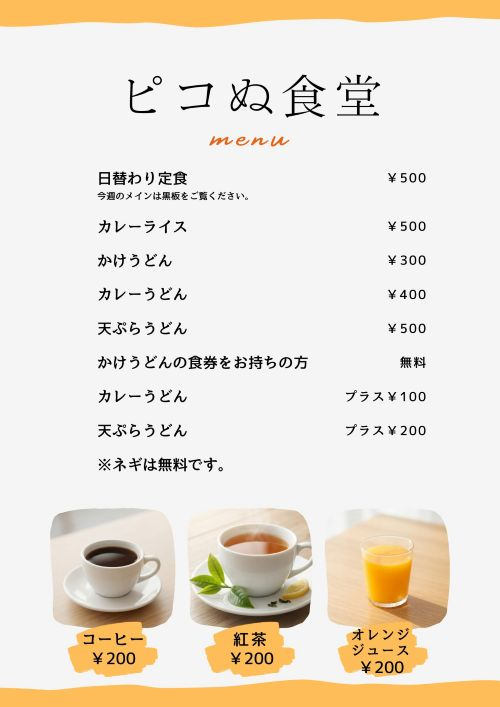

ピコぬ市役所食堂では、昼食を中心に各種メニューをご提供しています。 市役所にご用のある方だけでなく、市民の方もご利用いただけます。
メニュー

| かけうどん | 300円 |
|---|---|
| カレーうどん | 400円 |
| 天ぷらうどん | 500円 |
| カレーライス | 500円 |
| 日替わり定食 | 500円 |
うどんのネギはセルフサービスです。好きなだけお入れいただけます。
※ただし、盛りすぎにはご注意ください（詳細は未確認）。
営業時間
| 営業時間 | 11:00〜14:00 |
|---|---|
| 定休日 | 土曜日・日曜日・祝日 |
| 場所 | ピコぬ市役所1階 |
食券について
現代病相談窓口などで交付された食券は、市役所食堂でご利用いただけます。
| 基本メニュー | かけうどん |
|---|---|
| カレーうどんへの変更 | ＋100円 |
| 天ぷらうどんへの変更 | ＋200円 |
市役所内配達
市役所庁舎内への配達を行っています。
| 配達料 | 無料 |
|---|---|
| 配達範囲 | 市役所庁舎内のみ |
| 市役所外への配達 | 対応していません |
※市役所外からのご注文は受け付けていません。
※配達先は市役所庁舎内の各部署・窓口等をご指定ください。
※配達先は市役所庁舎内の各部署・窓口等をご指定ください。
ご案内
現代病相談窓口の相談後には、市役所食堂のうどん一杯分の食券が 交付される場合があります。
相談記録を閲覧された方にも食券が交付されます。 詳しくは現代病相談窓口記録ファイルをご覧ください。